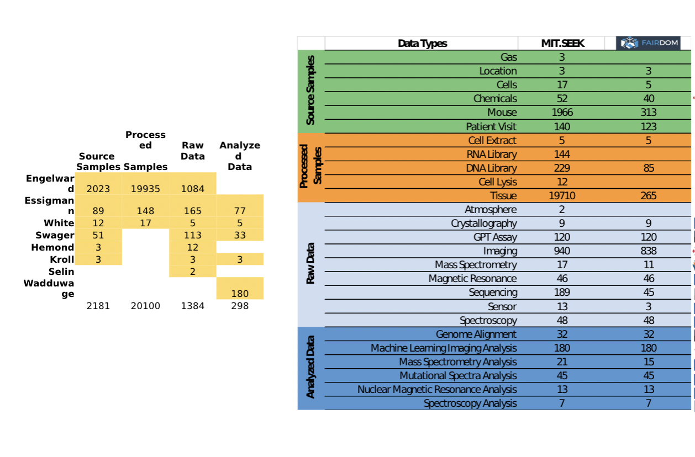

This marble solitaire game was made for Northeastern's Object Oriented Design course. Java and JUnit testing were utilized. It features three possible game modes playable from the command line with a multitude of options. Invalid moves and scores are notified to the user, and the game is over when there are no more possible moves left. The objective of the game is to clear as many marbles as possible.
This image processing software was made for Northeastern's Object Oriented Design course. Java, JUnit testing, and Java Swing were utilized. The software features 7+ image transformations users can perform on an image alongside loading and saving an image from their desktop. After each transformation, the transformed image alongside a histogram of the red, green, blue, and average values are shown.


This hospital database management software was made for Northeastern's Database Design course. SQL was used to create and manipulate the databases, and routes were written in Python. Alongside those languages, the software was made with the use of Flask, Docker, AppSmith, and ngrok. The software features 4 pages with actions to facilitate hospital administration for physicians, patients, and administrators. Some of the possible actions include viewing patient records, updating availability, and viewing patient and insurance information.

This flood it game was made for Northeastern's Fundamentals of Computer Science 2 course. Java, Java testing, and Java Random were utilized. The aim of the game is to get the entire board to be in one color in the given amount of moves possible. When a color is clicked, the board features a waterfall effect to fill the board with the clicked color if all the surrounding colors are the same. The game generates a random board everytime, keeps score, and has a timer to keep track of game time.
This figure generation code takes in a single JSON database list and turns it into these two figures, separated by experiment type, lab, type of sample, and more.
